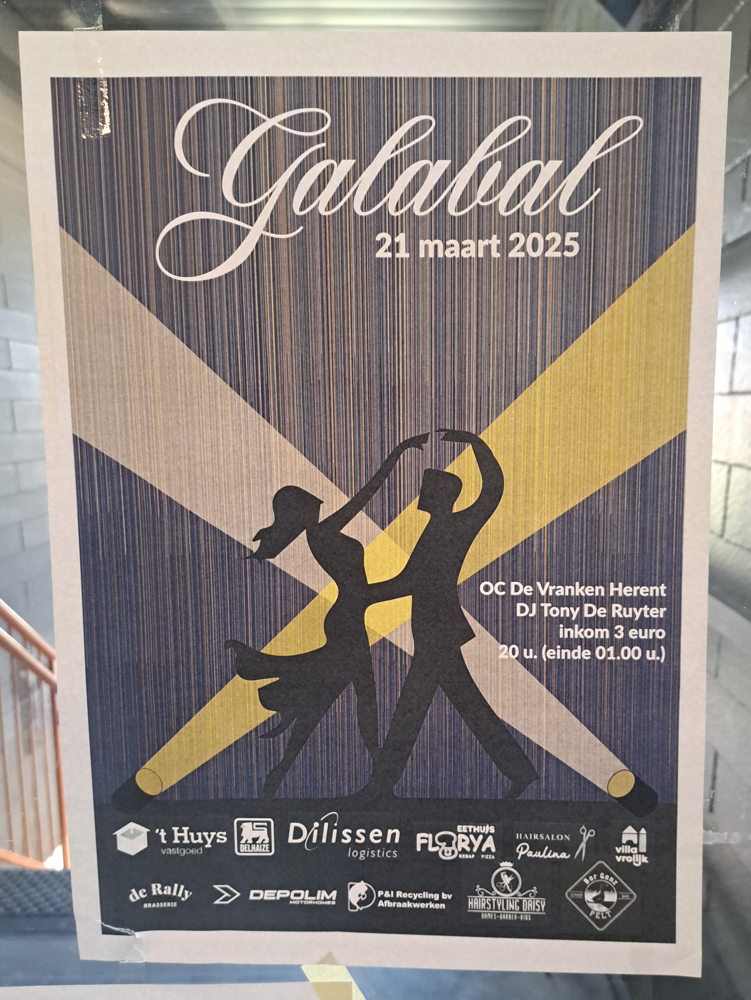
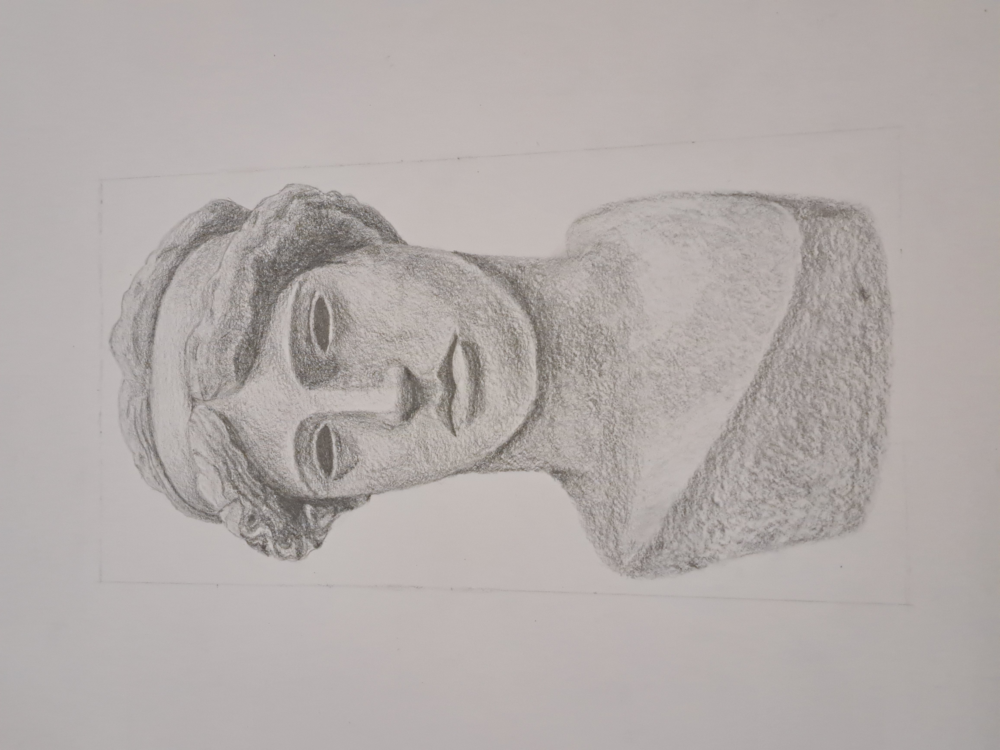
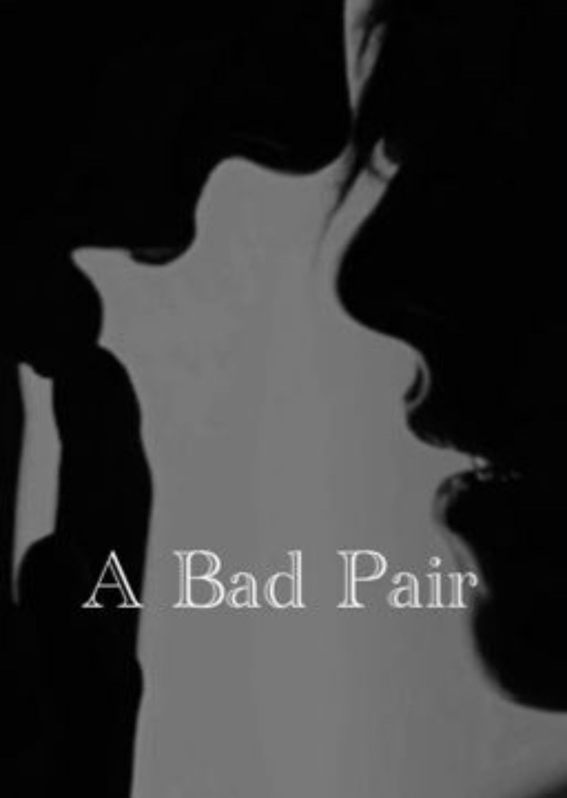

Ik ben Ruben Jans, student Digitale Vormgeving aan Hogeschool PXL. Ik heb een grote interesse in grafisch ontwerp en UX/UI design.
Ik combineer creativiteit met technologie om gebruiksvriendelijke en visueel sterke ontwerpen te maken.
Vaardigheden
Illustrator
Photoshop
Figma
HTML
CSS
JavaScript
Eigenschappen
Zelfstandigheid
Veiligheid
Nauwkeurigheid
Betrouwbaarheid
Orde en netheid
Creatief denken
Waarom Digitale Vormgeving?
Ik koos voor Digitale Vormgeving omdat ik creativiteit graag combineer met technologie.
Ik vind het interessant om ideeën om te zetten in visuele ontwerpen en interactieve toepassingen.
Waarom ben ik een goede designer?
Ik denk vanuit de gebruiker.
Ik werk nauwkeurig en gestructureerd.
Ik sta open voor feedback.
Ik combineer creativiteit met logica.
Ik geef niet snel op.
Projecten

Galabal Poster
Vak: Decor, Etalage & Publiciteit
Poster ontworpen voor het jaarlijkse galabal van de school.

Sculptuur
Vak: Waarnemingstekenen
Een studie van een sculptuur met focus op verhouding, schaduw en textuur.

Favoriet Boek
Persoonlijk project
Een persoonlijke sectie over boeken, inspiratie en verhalen.
Opleidingen
sep 2025 - jun 2027 — Digitale Vormgeving, Hogeschool PXL
sep 2021 - jun 2022 — STEM-Houttechnieken, WICO Campus TIO
sep 2020 - jun 2021 — STEM, Juniorcampus
sep 2019 - jun 2020 — STEM, WICO Campus TIO
Niet-school project
Mijn persoonlijke website/portfolio is een project waar ik mijn design en code combineer.
Van layout tot HTML, CSS en JavaScript: ik bouw dit stap voor stap zelf op.
Reflectie
Hier kan je mijn eindreflectie downloaden als tekstbestand.